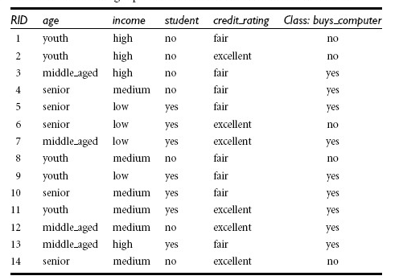

决策树分类
| 方法 |
属性选择度量 |
公式 |
是否二叉树 |
| ID3 |
信息增益 |
$$H(U)= -\sum_{m=1}^n \frac{d_i}{D} log \frac{d_i}{D}$$
$$H(A,U)=\sum_{i=1}^{n}\frac{d_i}{D} H(D_i)$$
$$G(A,U)=H(U)-H(age,U)$$
|
否 |
| C4.5 |
增益率 |
$$SplitH(age,U)=-\sum_{i=1}^v\frac{D_j}{D}*log(\frac{D_j}{D})$$
$$GR(age,U)=\frac{G(age,U)}{SplitH(age,U)}$$
|
否 |
| CART |
基尼系数 |
$$ Gini(D) = 1 - \sum_{i=1}^n p_i^2 $$
$$Gini(age,U)= min_{D_i\in D}\{\sum_{i=1}^{2}\frac{d_i}{D} Gini(D_i)\}$$
$$G(age,U)=Gini(D)-Gini(age,U)$$
|
是 |
| CHAID |
$\chi^2 检验$ |
$$\sum \frac{(A-T)^2}{T} 服从 \chi_v^2$$
$$v =(row -1)(column-1)$$
$$T_{RC}=\frac{n_R\cdot n_C}{n}$$
|
否 |
| 穷举CHAID |
$\chi^2 检验$ |
同上
|
否 |
| MARS |
$\chi^2 检验$ |
|
是 |
ID3 (Iterative Dichotomiser, ID3) 多元划分
信息熵
信息熵就是一组数据包含的信息，概率的度量。一组数据越有序信息，不确定越小，熵也就越低
\[H(U)=E[-log p_i] = -\sum_{m=1}^n p_i log p_i\]
如果一组数据是可计数的，他们出现的次数是 :\({d_1,d_2,...,d_n};D=\sum_1^n d_i\),则其熵为：
\[H(U)=E[-log p_i] = -\sum_{m=1}^n \frac{d_i}{D} log \frac{d_i}{D}\]
信息增益
两种分布之间信息的差异
\[G(x,U) = H(U) - H(x,U)\]
H(x,U)为H(U)在确定了x维度后的熵，若G(x,U)越大，则代表决策x后损失的信息越大，决策后的列纯度更高，所以优先考虑x的选择
例子：

步骤1：整体熵
计算目标属性列的熵为 buys_computer列的熵：
\[H(U)=-\frac{5}{14}log\frac{5}{14}-\frac{9}{14}log\frac{9}{14}\]
步骤2：计算所有列的熵
如：计算age的熵，确定age后的熵为：
\[H(age,U)=\frac{5}{14}H(D_{age}) + \frac{4}{14}log\frac{5}{14}H(D_{middle\_aged}) + \frac{5}{14}H(D_{old})\]
步骤3：熵增益，确定选择的列
\[G(age,U) = H(U) - H(age,U)\]
所以优先选择熵增益大的列
步骤4：递归2-3的产生的每个分支，直到达到停止条件
递归停止条件:
- 当分到某列后，目标属性只有一个值
- 当分到某列后，某个值的比例已经超过我们给定的阈值，比如，yes超过90%则停止
C4.5 增益率 gain ratio
ID3 的弊端是倾向于选择大量不同值的属性列，这样属性中的每个值都是纯的
C4.5 在其基础上对信息增益做了修改
所以在计算信息增益的时候，必须考虑分列的时候的分列本身产生的信息"分列信息(split information)",信息增益必须排除该方面的信息
\[分列信息:SplitH(age,U)=-\sum_{i=1}^v\frac{D_j}{D}*log(\frac{D_j}{D})\]
\[增益率:GR(age,U)=\frac{G(age,U)}{SplitH(age,U)}\]
CART 多元划分
CHAID 卡方自动交叉验证
步骤1：所有的预测自变因素需转变成离散的分类
步骤2：合并步
对于每个属性变量X，合并非显著差异的分类。如果X被选为分裂变量，X的各个最终分类将成为子节点。
在分裂步用到的调整P值也是在这一步计算
- 1.如果变量X只有一类，停止计算并且设置调整P为1
-
2.如果变量X有2类，利用 Bonferroni 校正调整 P值
Bonferroni校正：如果在同一数据集上同时检验n个独立的假设，那么用于每一假设的统计显著水平，应为仅检验一个假设时的显著水平的1/n
-
3.如果X大于等于2类，找出X中合适的并且具有最小显著差异的两对类别（顺序型变量中相邻的两类为合适的，对于名义变量，任意两类都合适）。
对比的属性分量为，该两个类比的其他的属性列，
最小显著差异的两类指的是在统计检验中具有最大的P值（应用一对分类）
-
4.对于具有最大P值的一对分类，检查该P值是否大于用户设定的显著水平a。如果大于a，这一对分类合并为一个合成类。
这时候变量X便形成了一个新的分类。如果不大于a，跳到第7步
-
5.（可选）如果新形成的合成类包含了三个以上原始类，则找出合成类中最优的二分类点（P值最小的），
假如对应的P值不大于用户设定的显著水平a2，执行该分裂。
-
6.返回第2步
-
7.（可选）任何具有太少观察值（小于用户设定的最小分割大小）的类别将合并到与其最为相似（具有最大的P值）的其他类别中
步骤3：合并步
每个解释变量的最优分裂值已经在合并步中确定，分裂步则要确定哪个解释变量作为分裂节点。通过比较每个解释变量的调整P值可以确定最优分裂变量，调整P值在合并步中已经计算出来。
- 1.选择具有最小调整P值的解释变量
-
2.如果该调整P值小于等于用户设定的显著水平a3，则使用该解释变量分裂节点。
否则，不分裂并且考虑作为叶子节点
分裂步的P值和合并步的P值不同点在于合并步只需要一对分类计算P值，分裂步需要所有分类计算P值
穷举 CHAID
- 1.如果变量X只有一类，停止计算并且设置调整P为1
-
2.设index=0.基于目前X的分类计算P值。称P值p(index)=p(0)
-
3.找出X中符合规则并且具有最小显著差异的两对类别。最小显著差异的两类指的是在统计检验中具有最大的P值（应用一对分类）
-
4.合并第3步确定的具有最大P值的分类对为一个合成类。（区别点）
-
5.（可选）如果新形成的合成类包含了三个以上原始类，则找出合成类中最优的二分类点（P值最小的），
如果对应的P值比前一步中合并此合成类的P值大，执行该分裂。(Clementine没有这一步)
-
6.更新index=index+1，基于目前X的分类计算新的P值，并赋予p(index)
-
7.重复第3步到第6步直到只剩两大类。在所有的index中，找到使p（index）值最小的分类方式
-
8.（可选）任何具有太少观察值（小于用户设定的最小分割大小）的类别将合并到与其最为相似（具有最大的P值）的其他类别中
-
9.应用Bonferroni方法计算合并好的分类的调整P值（应用所有分类）